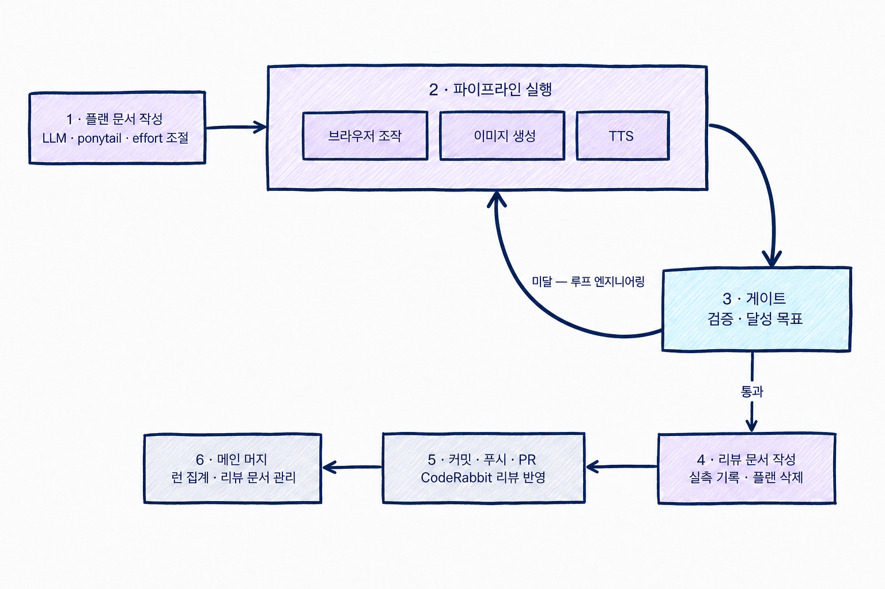
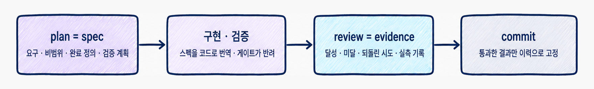
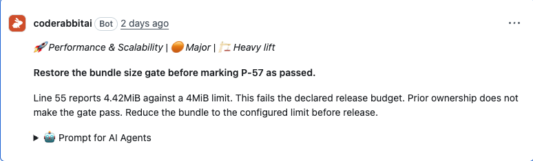
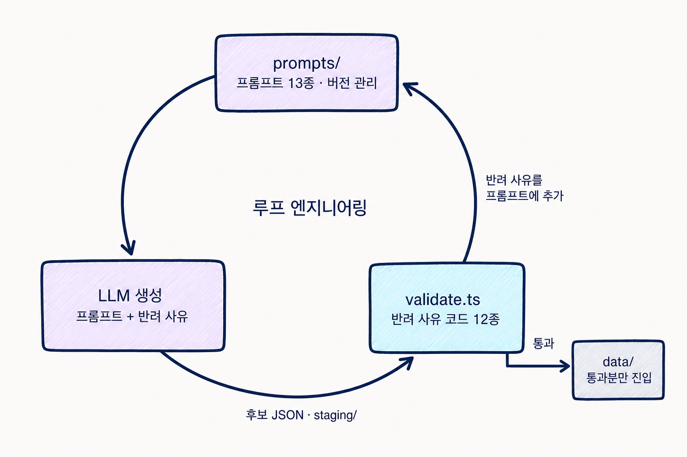
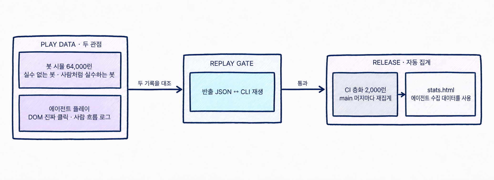
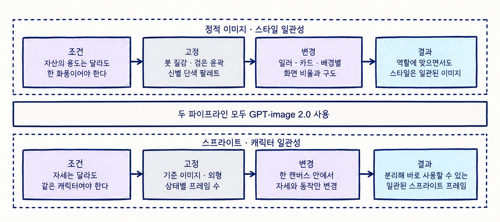
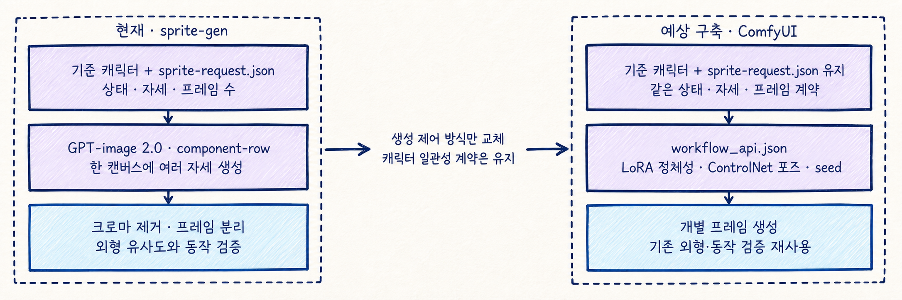
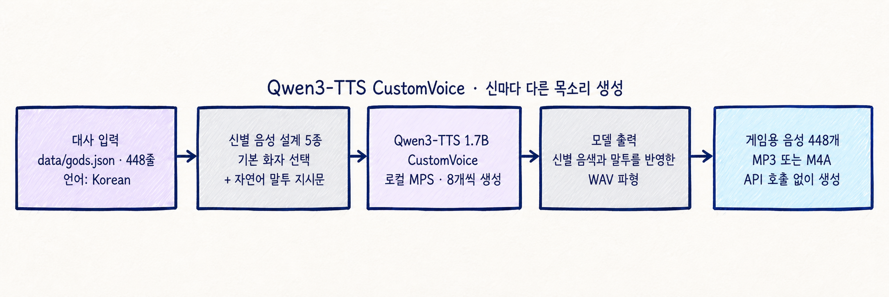
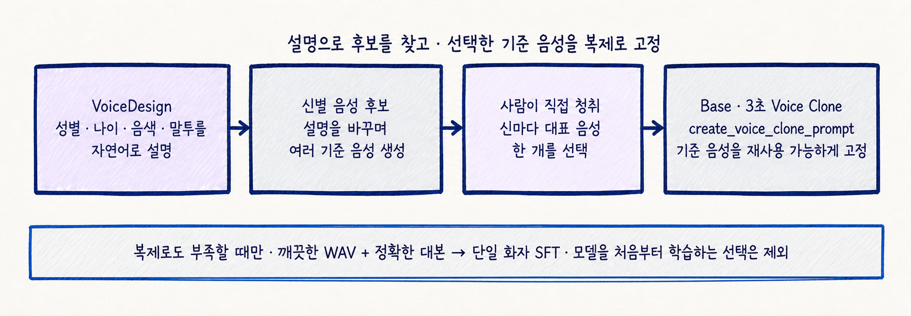

신들의 저울
7일, 혼자서 —
에셋 생성부터 밸런스까지 AI로
음성, 스프라이트, 카드 일러스트, 배경, 신 일러스트까지 게임에 들어간 에셋 전부를 혼자 AI로 만들었다. 카드 179장 · 은혜 45종 · 적 19종 · 신 조합 10개가 얽히는 덱빌딩은 나올 수 있는 시나리오를 사람 손으로 다 재볼 수 없는 규모라, 밸런스는 LLM과 봇 시뮬레이션 수만 런으로 맞췄다.
그래서 이 문서의 실제 주제는 검증이다 — AI에게 시킨 모든 작업에 검증 단계를 붙인다는 원칙 하나로 7일을 버텼다.
외부 에셋은 이 표가 전부다
표에 명시한 외부 자산·도구를 제외하면, 게임의 이미지·음악·음성·코드·콘텐츠는 모두 LLM으로 생성했다.
| 자산 | 출처 | 라이선스 |
|---|---|---|
| 폰트 2벌 | Galmuri11 (Lee Minseo) | SIL OFL 1.1 |
| 아이콘 28개 | game-icons.net (Lorc, Delapouite, Sbed, Skoll) | CC BY 3.0 |
| 커서 3 · 파티클 4 · 효과음 4 | Kenney (Cursor Pixel · Particle · Casino Audio) | CC0 1.0 |
| 효과음 5 | Mixkit Sound Effects | Mixkit SFX Free License |
| 도구 | sprite-gen(스프라이트) · ponytail(코딩 스킬) · Qwen3-TTS(음성, Apache 2.0) · aside(브라우저 E2E) · CodeRabbit(코드 리뷰) | |
정본: ATTRIBUTION.md
숫자로 보는 7일
전 과정 · 1인
= 리뷰 문서
PR 15개
승률 게이트 포함
6회차
이미지·음성·영상
두 신을 후원자로 모시고 12층을 오르는 덱빌딩 로그라이크. 카드 179 · 은혜 45 · 적 19 · 신 5(조합 10) — 이 콘텐츠 전부가 아래에서 설명할 파이프라인의 산출물이다. 플레이: bongseop-kim.github.io/god-scales
프로젝트 단위 AI 사용량 — Codex & Claude
gpt-5.6-sol 191.5M · 96.3%
gpt-5.6-terra 5.84M · gpt-5.5 1.32M
gpt-5.4-mini 121.8K
claude-opus-5 707.9M · 90.8%
claude-fable-5 71.5M
2026.08.10 KST 스냅샷. Codex는 Orca의 god-scales 워크트리 집계, Claude는 ~/.claude 세션 로그 집계. Codex의 캐시 입력은 입력의 부분집합이라 총량에 다시 더하지 않았고, Claude의 캐시 읽기는 별도 항목이라 총량에 포함했다.
목차
플랜에서 머지까지 — 게이트를 통과할 때까지 다시 실행한다

보라 — 터미널에서 LLM이 만든다(1~4) · 하늘 — 게이트가 판정한다 · 회색 — GitHub(5~6). 게이트에 미달하면 원하는 결과가 나올 때까지 파이프라인을 재실행한다(루프 엔지니어링). 통과분만 리뷰 문서와 함께 PR로 나가고, 메인 머지로 한 플랜이 끝난다 — 다음 플랜은 새 세션이다. 구조 원본은 submission/diagrams/overview.d2, 최종 다이어그램은 submission/diagrams/overview.png이다.
스펙 주도 개발 (SDD)

- plan은 작업 메모가 아니라 이 저장소의 스펙이다 — 코드를 쓰기 전에 범위 · 완료 정의 · 검증 명령을 고정한다
- AI는 스펙을 코드와 데이터로 번역하고, 테스트와 게이트가 수락 여부를 판정한다 — 실패하면 구현을 고치며 성공 조건을 낮추지 않는다
- review는 감상이 아니라 스펙 대비 증거다 — 달성 · 미달 · 대가를 실측으로 남기고 plan을 삭제한 뒤, 통과한 결과만 커밋한다
규범 문서를 로드 시점으로 나눴다
두 번 이상 말하게 되는 것만 문서로 옮긴다 — 상시 로드는 CLAUDE.md 여섯 줄이 전부고, 한 곳만 고치면 이후 모든 작업에 적용된다.
코드 리뷰도 LLM이 한다 — 커밋 전 한 번, PR에서 한 번
① 커밋 전 — ponytail 스킬
커밋하기 전에 최소주의 스킬로 다시 본다 — 군더더기를 덜어내는 리뷰. 테스트 픽스처가 400줄 → 24줄이 됐다(R-41).
② PR — CodeRabbit (CI 자동 트리거)
푸시하면 리뷰가 자동으로 달린다 — 잘못을 잡는 리뷰.

PR #11의 실제 코멘트 — 리뷰 문서가 번들 상한 초과(4.42MiB > 4MiB)를 넘어가려던 것을 잡았다.
카드 179장 · 적 19종 — 게임 데이터도 LLM이 만들었다
2장에서 말한 카드 179장이 여기서 나온다. 카드·적·요구·층 배치 같은 게임 데이터 자체를 LLM이 대량 생성했다. 생성물을 그대로 넣으면 스키마 오류 하나, 중복 한 장이 게임을 조용히 깨뜨리기 때문에 중간에 검증기 validate.ts를 세웠다 — 통과분만 게임에 들어가므로 수백 개 데이터를 사람이 한 장씩 검수하지 않아도 된다.

실측 — 제우스 카드 30장 중 10장을 반려해 재생성했고, 최종 27장을 반영했다. 전 과정은 logs/generation/card-v1-zeus.md에 남는다.
브라우저 에이전트가 화면을 스스로 캡처하고 진단한다
DOM 검증만으로는 못 잡는 버그가 있다 — 요소가 DOM에는 멀쩡히 있어도 화면에서는 겹치거나 가려질 수 있다. 그래서 브라우저 에이전트가 조작·측정은 빠르고 결정론적인 DOM으로 하고, 사용자 눈에 보이는 최종 화면은 스크린샷을 찍어 직접 판정한다. HUD·화면 버그 대부분이 사람 눈에 닿기 전에 여기서 잡혔고, 같은 에이전트가 게임 플레이까지 한다 — 다음 장.

왼쪽에서 게임을 직접 조작해 「방어 4를 가진 적」 상황을 만들고, 오른쪽에서 캡처를 분석해 초록 방어량 4가 빨간 −5 왼쪽에 뜨는지 판정하는 중 — 브라우저 조작은 aside CLI로 통일했다.
스크립트 봇과 LLM 에이전트의 플레이가 밸런스 데이터가 된다


LLM 없는 스크립트 봇 두 종류와 LLM 브라우저 에이전트가 모은 플레이 데이터가 stats.html에 모인다. LLM이 이 통계를 보고 카드 수치와 적 체력을 고치며, 조합 승률 하한 하나가 변경의 수락 여부를 판정한다.
같은 GPT-image 2.0에 두 가지 일관성 계약을 걸었다

정적 이미지는 신 일러부터 카드·배경까지 용도는 달라도 한 화풍으로 보여야 한다. 스프라이트는 한 캐릭터의 자세만 달라야 한다. 모델은 같지만 이 두 조건을 프롬프트·요청 JSON·검증 단계로 각각 고정했다.
ComfyUI로 바꿔도 캐릭터 일관성 계약은 남긴다

현재는 한 캔버스 안에서 동일 캐릭터의 여러 자세를 만들어 정체성을 묶는다. 예상 ComfyUI 파이프라인은 LoRA로 캐릭터를, ControlNet으로 자세를 고정해 개별 프레임을 만들되 sprite-request.json과 외형·동작 검증은 재사용한다.
* ComfyUI 파이프라인은 현재 프로젝트에 활용되지 않은 예상 구축안입니다.
로컬 TTS 모델 Qwen3-TTS 사용

신마다 기본 화자와 자연어 말투 지시문을 다르게 넣고, Qwen3-TTS CustomVoice로 전체 448줄을 로컬에서 생성했다.
목소리를 매번 설계하지 않고, 기준 음성을 고정한다

다음 단계에서는 VoiceDesign을 후보 탐색에만 사용하고, 선택한 기준 음성을 Voice Clone으로 고정한다. 복제로도 부족할 때만 단일 화자 파인튜닝을 검토한다.
* VoiceDesign과 Voice Clone은 현재 프로젝트에 활용되지 않은 개선 목표입니다.
AI는 만들고,
게이트가 지켰다.
7일 동안 AI는 코더이자 작가·화가·작곡가·성우·플레이테스터였고, 사람의 일은 그 전부에 검증 단계를 붙이는 것이었다. 프롬프트 원문·게이트 코드·회차 로그·리뷰 87건이 전부 저장소에 남아 있다 — 이 문서는 그 목차다.